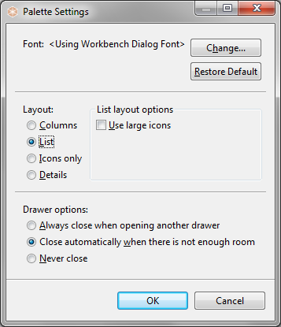
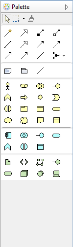
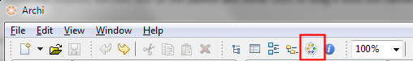
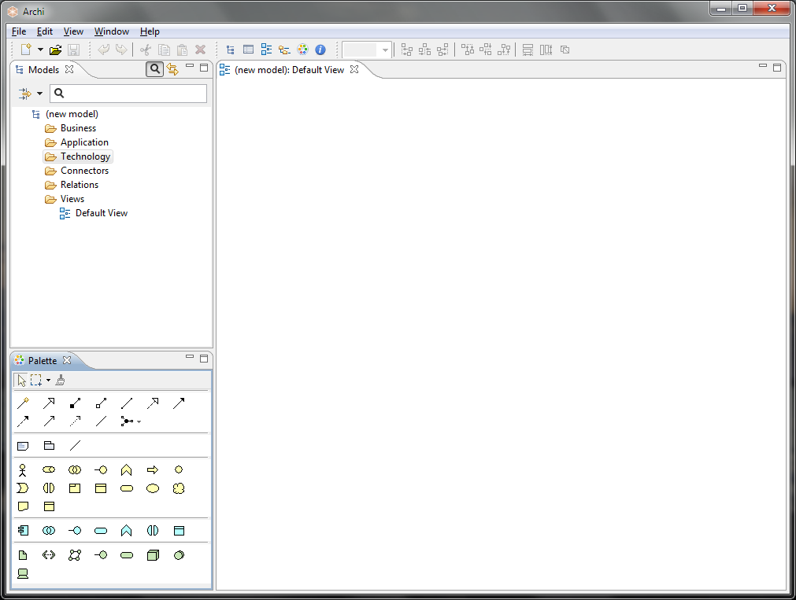

The Palette in a View
The palette contains the drawing tools, and elements and relationships that can be added to a View. It is an area that is attached to a View.
The Palette in a View
To create new elements and relationships in a View select the required element tool on the palette and either click or drag it onto the canvas area. Once the figure has been added to the canvas you can resize and re-position it by the usual drag actions.
You can configure how the Palette displays items by right-clicking on the Palette and choosing "Settings...":

Palette Settings
A useful setting is to display the Palette with "Icons only" in order to see all available Palette tools:

The Palette displaying as "Icons only"
If you cannot see the palette in a View it may be closed. If this is the case, open it by clicking the "Show Palette" triangle button at the top-right of the View window.
By default, each View has its own attached Palette. It is also possible to have a single, detachable Palette that you can drag and dock to any position in the application window. To do this, click on the "Palette" button on the main toolbar:

The "Palette" button on the main toolbar
Pressing this button detaches the Palette from the View and creates a Palette window. You can drag and dock this to anywhere in the application space. The following example has the Palette docked in the lower left corner:

The Palette window docked in the lower left corner
Closing the Palette window re-attaches it to any open Views.